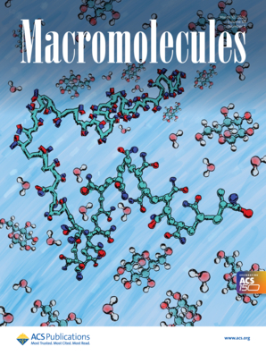
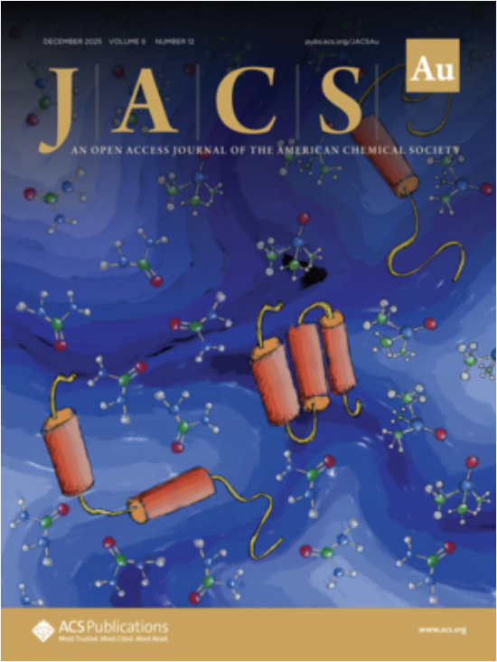
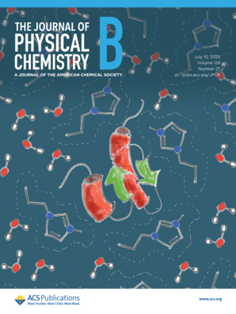
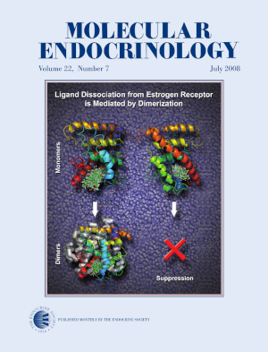

Molecular Basis for Solvation Structure and Thermodynamics of Polyacrylamide in Aqueous Solutions of Glucose.
Macromolecules, 2026.

Molecular Basis for Solvation Structure and Thermodynamics of Polyacrylamide in Aqueous Solutions of Glucose.
Macromolecules, 2026.

Osmolyte Structural and Thermodynamic Effects Across the Protein Folding Landscape.
JACS Au, 5, 12, 6025–6041, 2025.

Cation Hydrophobicity Effects on Protein Solvation in Aqueous Ionic Liquids.
J. Phys. Chem. B, 129 (27) 6765-6776, 2025.

Fractionation of Squid Pens with Ionic Liquids─An Upgraded β-Chitin and Shellfish Protein Production.
ACS Sustainable Chem. Eng. 13 (7) 2649–2660, 2025.
Molecular dynamics and solvation structures of the β-glucosidase from Humicola insolens (BGHI) in aqueous solutions containing glucose.
Int. J. Biol. Macromol. 286 (138210), 2025.
Competitive Effects of Anions on Protein Solvation by Aqueous Ionic Liquids.
J. Phys. Chem. B, 128 (32) 7792–7802, 2024.
Helical Content Correlations and Hydration Structures of the Folding Ensemble of the B Domain of Protein A.
J. Chem. Inf. Model. 68, 8, 3350-3359, 2024.
Trifluoroethanol direct interactions with protein backbones destabilize alpha-helices.
J. Mol. Liq. 365 (2022) 120209.
Ionic liquid solvation of proteins in native and denatured states.
J. Mol. Liq. 363 (2022) 119953.
ComplexMixtures.jl: Investigating the structure of solutions of complex-shaped molecules from a solvent-shell perspective.
J. Mol. Liq. 347, 117945, 2022.
Correlated counterion effects on the solvation of proteins by ionic liquids.
J. Mol. Liq. 320, 114347, 2020.
The shift in urea orientation at protein surfaces at low pH is compatible with a direct mechanism of protein denaturation.
Phys. Chem. Chem. Phys. 22, 354-367, 2020.
Molecular interpretation of preferential interactions in protein solvation: a solvent-shell perspective by means of minimum-distance distribution functions.
J. Chem. Theor. Comp. 13, 6358–6372, 2017.
Molecular basis for competitive solvation of the Burkholderia cepacia lipase by sorbitol and urea.
Phys. Chem. Chem. Phys. 18, 21797-21808, 2016.
Enzyme Microheterogeneous Hydration and Stabilization in Supercritical Carbon Dioxide.
J. Phys. Chem. B, 116, 5671-5678, 2012.
CellListMap.jl: Efficient and customizable cell list implementation for calculation of pairwise particle properties within a cutoff.
Computer Phys. Commun. 279, 108452, 2022.
Packmol: A package for building initial configurations for molecular dynamics simulations.
J. Comp. Chem. 30, 2157, 2009.
Mapping the energy landscape of a fold-switching protein MAD2.
Protein Science, 2025.
Extended Conformational Selection in the Antigen–Antibody Interaction of the PfAMA1 Protein.
J. Phys. Chem. B, 128 (35) 8400-8408, 2024.
Intrinsically Disordered Malaria Antigens: An Overview of Structures, Dynamics and Molecular Simulation Opportunities.
J. Braz. Chem. Soc. 35, 10, e-20240102, 1-21, 2024.
Structural discrimination analysis for constraint selection in protein modeling.
Bioinformatics, 21(37), 3766-3773, 2021.
Structural Complementarity of Distance Constraints Obtained from Chemical Crosslinking and Amino Acid Coevolution.
Proteins, 88(4), 625-632, 2020.
Statistical force-field for structural modeling using chemical cross-linking/mass-spectrometry distance constraints.
Bioinformatics, 35(17), 3005-3012, 2019.
TopoLink: Evaluation of structural models using chemical crosslinking distance constraints.
Bioinformatics, 35(17), 3169-3170, 2019.
Coevolutionary Signals and Structure-Based Models for the Prediction of Protein Native Conformations.
In: Computational Methods in Protein Evolution, Methods in Molecular Biology. vol. 1851. Springer 2019.
Prediction of kinetics of protein folding with non-redundant contact information.
Bioinformatics, 34(23), 4034-4038, 2018.
Enhancing protein fold determination by exploring the complementary information of chemical cross-linking and coevolutionary signals.
Bioinformatics, 34(13), 2201-2208, 2018.
The redundancy of NMR restraints can be used to accelerate the unfolding behavior of an SH3 domain during molecular dynamics simulations.
BMC Struct. Biol. 11:46, 2011.
Packmol
Packmol: A package for building initial configurations for molecular dynamics simulations.
J. Comp. Chem. 30, 2157, 2009.
Packing Optimization for Automated Generation of Complex System's Initial Configurations for Molecular Dynamics and Docking.
J. Comp. Chem. 24, 819-825, 2003.
Wrapping Up Viruses at Multiscale Resolution: Optimizing PACKMOL and SIRAH Execution for Simulating the Zika Virus.
J. Chem. Inf. Model. 61(1), 408-422, 2021.
CellListMap.jl: Efficient and customizable cell list implementation for calculation of pairwise particle properties within a cutoff.
Computer Phys. Commun. 279, 108452, 2022.
Structural alignment
Automatic identification of mobile and rigid substructures in molecular dynamics simulations and fractional structural fluctuation analysis.
PLoS ONE 10 (3): e01109264, 2015.
Low Order Value Optimization and Applications.
J. Glob. Optim. 43, 1-22, 2008.
Trust-region superposition methods for protein alignment.
IMA J. Numer. Anal. 28, 690-710, 2008.
Continuous Optimization Methods for Structure Alignment.
Math. Program. Ser. B. 112, 93-124, 2008.
Convergent Algorithms for Protein Structural Alignment.
BMC Bioinformatics, 8, 306, 2007.
Electronic structure calculation algorithms
Sparse projected-gradient method as a linear-scaling low-memory alternative to diagonalization in self-consistent field electronic structure calculations.
J. Chem. Theor. Comput. 9(2), 1043-1051, 2013.
Inexact Restoration method for minimization problems arising in electronic structure calculations.
Comp. Optimiz. Appl. 50, 555-590, 2011.
Density-based globally convergent trust-region methods for self-consistent field electronic structure calculations.
J. Math. Chem. 40, 349-377, 2006.
Globally convergent trust-region methods for self-consistent field electronic structure calculations.
J. Chem. Phys. 121, 10863-10878, 2004.
On the interpretation of subtilisin Carlsberg time-resolved fluorescence anisotropy decays: modeling with classical simulations.
J. Chem. Inf. Model. 60 (2) 747-755, 2020.
Parametric Models to Compute Tryptophan Fluorescence Wavelengths from Classical Protein Simulations.
J. Comp. Chem. 39(19), 1249-1258, 2018.
Dynamics of Nuclear Receptor Helix-12 switch of transcription activation by modeling time-resolved fluorescence anisotropy decays.
Biophys. J. 105(7), 1670-1680, 2013.
Measuring the conductivity of very dilute electrolyte solutions, drop by drop.
Química Nova, 41, 7, 814-817, 2018.
O Espectro Roto-Vibracional do Ácido Clorídrico.
em "Química em 50 ensaios". L. Tasić (org.) Grupo Átomo e Alínea, 2017.
Introducing the Levinthal's protein folding paradox and its solution.
J. Chem. Educ. 91, 1918-1923, 2014.
Fundamentos de Simulação por Dinâmica Molecular.
em "Métodos de Química Teórica e Modelagem Molecular". Eds. N. H. Morgon e K. Coutinho, Editora Livraria da Física, São Paulo, 2007.
Moltiverse: Molecular Conformer Generation Using Enhanced Sampling Methods.
J. Chem. Inf. Model. 64 (12) 5988-6013, 2025.
Intrinsically Disordered Malaria Antigens: An Overview of Structures, Dynamics and Molecular Simulation Opportunities.
J. Braz. Chem. Soc. 35, 10, e-20240102, 1-21, 2024.
Elucidating the Structural Basis of the Intracellular pH Sensing Mechanism of TASK-2 K2P Channels.
Int. J. Mol. Sci. 21(2), 532, 2020.
Molecular simulations of fluconazole-mediated inhibition of sterol biosynthesis.
J. Biomol. Struct. Dyn. 38 (6) 1659-1669, 2020.
Oncogenic basic amino acid insertions at the extracellular juxtamembrane region of IL7Ra cause receptor hypersensitivity.
Blood, 133, 1259-1263, 2019.
Molecular mechanism of activation of Burkholderia cepacia Lipase at aqueous-organic interfaces.
Phys. Chem. Chem. Phys. 19, 31499-31507, 2017.
A network model predicts the intensity of residue-protein thermal coupling.
Bioinformatics, 33, 2106-2113, 2017.
Anthrax Edema Factor: An Ion-Adaptive Mechanism of Catalysis with Increased Transition State Conformational Flexibility.
J. Phys. Chem. B, 120 (27), 6504-6514, 2016.
Small-Angle X-ray Scattering and Structural Modeling of Full-Length Cellobiohydrolase I from Trichoderma harzianum.
Cellulose 20(4), 1573-1585, 2013.
Molecular Motions as a Drug Target: Mechanistic Simulations of Anthrax Toxin Edema Factor Function Led to the Discovery of Novel Allosteric Inhibitors.
Toxins, 4(8), 580-604, 2012.
Hb S-São Paulo: a new sickling hemoglobin with stable polymers and decreased oxygen affinity.
Arch. Biochem. Biophys, 519, 23-31, 2012.
Mechanism of reactant and product dissociation from the Anthrax Edema Factor: a Locally Enhanced Sampling and Steered Molecular Dynamics Study.
Proteins, 79, 1649-1661, 2011.
CHARMM Force Field Parameterization of Rosiglitazone.
Int. J. Quantum. Chem. 111, 1346-1354, 2011.
Molecular characterization of a miraculin-like gene differentially expressed during coffee development and coffee leaf miner infestation.
Planta, 233, 123-137, 2011.
Molecular basis for the thermostability and thermophilicity of laminarinases: X-ray structure of the hypherthermostable laminarinase from Rhodothermus marinus and molecular dynamics simulations.
J. Phys. Chem. B, 115, 7940-7949, 2011.
Activation of the edema factor of Bacillus anthracis by calmodulin: Evidence of an interplay between the EF-calmodulin interaction and calcium binding.
Biophys. J. 99, 2264-2272, 2010.
ATP conformation and ion binding modes in the active site of the Anthrax Edema Factor: A computational analysis.
Proteins 77, 971, 2009.
A review on the dynamics of water.
Braz. J. Phys. 34, 3-15, 2004.
Conformational Diversity of the Helix 12 of the Ligand Binding Domain of PPARγ and Functional Implications.
J. Phys. Chem. B, 119 (50), 15418-15429, 2015.
Identification of a New Hormone Binding Site on the Surface of Thyroid Hormone Receptor.
Mol. Endocr. 28(4), 534-545, 2014.
Dynamics of Nuclear Receptor Helix-12 switch of transcription activation by modeling time-resolved fluorescence anisotropy decays.
Biophys. J. 105(7), 1670-1680, 2013.
Medium Chain Fatty Acids are Selective Peroxisome Proliferator Activated-γ Activators and Pan-PPAR Partial Agonists.
PLoS ONE 7(5): e36297, 2012.
Mapping the Intramolecular Vibrational Energy Flow in Proteins Reveals Functionally Important Residues.
J. Phys. Chem. Lett. 2, 16, 2073-2078, 2011.
Helix 12 dynamics and thyroid hormone receptor's activity: experimental and molecular dynamics studies of Ile280 mutants.
J. Mol. Biol. 412, 5, 882-893, 2011.
Analysis of agonist and antagonist effects on Thyroid Receptor conformation by Hydrogen/Deuterium-exchange.
Mol. Endocrinol. 25, 15-31, 2011.
On the denaturation mechanisms of the ligand binding domain of thyroid hormone receptors.
J. Phys. Chem. B, 114, 1529-1540, 2010.
Structural modeling of high-affinity thyroid receptor-ligand complexes.
Europ. Biophys. J. 39, 1523-1536, 2010.
Gaining Ligand Selectivity in Thyroid Hormone Receptors via Entropy.
Proc. Natl. Acad. Sci USA, 106, 20717-20722, 2009.
Structural basis of GC-1 selectivity for thyroid hormone receptor isoforms.
BMC Struct. Biol. 8, 8, 2008.
Ligand Dissociation from Estrogen Receptor Is Mediated by Receptor Dimerization: Evidence from Molecular Dynamics Simulations.
Mol. Endocrinol. 22, 1565-1578, 2008.

Only Subtle Protein Conformational Adaptations Are Required for Ligand Binding to Thyroid Hormone Receptors: Simulations Using a Novel Multipoint Steered Molecular Dynamics Approach.
J. Phys. Chem. B, 112, 10741-10751, 2008.
Molecular Dynamics Simulations of Ligand Dissociation from Thyroid Hormone Receptors: Evidence for the Likeliest Escape Pathway and Its Implications for the Design of Novel Ligands.
J. Med. Chem. 49, 23-26, 2006.
Molecular Dynamics Simulations Reveal Multiple Pathways of Ligand Dissociation from Thyroid Hormone Receptors.
Biophys. J. 89, 2011-2023, 2005.
Simulações de Dinâmica Molecular dos Receptores do Hormônio Tireoidiano.
Tese de Doutorado.
Synthesis, characterization and catalytic properties of sol-gel derived mixed oxides.
J. Phys. Chem. Solids 64, 2385-2389, 2003.
Thermochemical data on adducts of copper chloride with the amino acids lysine and glycine.
Thermochim. Acta 395, 21-26, 2003.
Synthesis, characterization and a thermogravimetric study of copper, cobalt and tin mono- and bis-adducts with ethyleneurea, ethylenethiourea and propyleneurea.
Trans. Met. Chem. 27, 748-750, 2002.
A calorimetric investigation into copper-arginine and copper-alanine solid state interactions.
Trans. Met. Chem. 27, 253-255, 2002.
Synthesis, characterization and thermal behavior of 18 cadmium halides adducts involving ethyleneurea, ethylenethiourea and propyleneurea.
Thermochim. Acta 376, 91-94, 2001.
Decrease of interlamellar spacing of silica samples induced by external pressure.
J. Non-Cryst. Solids, 276, 56-60, 2000.
{kind=link}